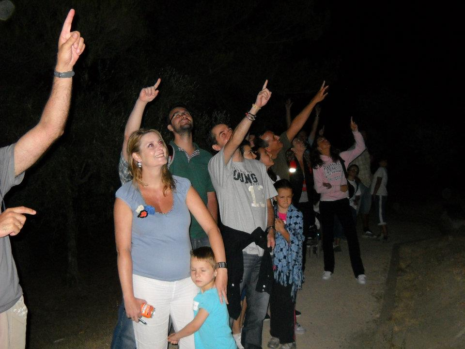

Observación de estrellas en Andalucía: vive el cielo nocturno como nunca antes
Descubre la belleza del cielo nocturno con nuestras experiencias guiadas de observación astronómica. Vive la emoción de ver planetas, constelaciones y galaxias a través de telescopios profesionales en entornos únicos de Andalucía.
¿Qué puedes observar en una noche estrellada?
Durante nuestras sesiones podrás observar planetas como Júpiter y Saturno, estrellas dobles, cúmulos abiertos y globulares, nebulosas y galaxias lejanas. Utilizamos telescopios de alta calidad y prismáticos astronómicos para ofrecer una experiencia visual impactante, adaptada a todos los niveles.
Observar las estrellas: una experiencia astronómica para todos
No necesitas conocimientos previos para participar. Nuestros monitores te guiarán en la identificación de constelaciones, el uso de telescopios y la comprensión del cielo visible. Una actividad perfecta para escolares, familias, adultos, asociaciones y eventos culturales.

Actividades de observación para todos los públicos
Organizamos sesiones adaptadas a distintos perfiles: centros educativos, grupos turísticos, asociaciones de vecinos o eventos municipales. También realizamos actividades inclusivas para personas con diversidad funcional.
Preguntas frecuentes sobre observación de estrellas
▶ ¿Es necesario tener experiencia previa?
No, nuestras sesiones están pensadas para todos los públicos. Explicamos todo de forma clara y didáctica para que cualquiera pueda disfrutar de la experiencia, sin importar sus conocimientos previos.
▶ ¿Dónde se realizan las observaciones?
Seleccionamos espacios naturales de Andalucía con baja contaminación lumínica, ideales para disfrutar del cielo estrellado en todo su esplendor.
▶ ¿Qué pasa si está nublado?
Si las condiciones meteorológicas no permiten la observación, ofrecemos alternativas como charlas astronómicas, contenidos audiovisuales o la reprogramación de la actividad.
▶ ¿Qué equipo se utiliza?
Utilizamos telescopios astronómicos de alta gama, prismáticos y punteros láser para señalar objetos celestes en el cielo. Todo el material está incluido en la actividad.
▶ ¿Puedo llevar a mis hijos?
¡Por supuesto! Esta actividad es apta para todas las edades y puede convertirse en una experiencia educativa y divertida para toda la familia.